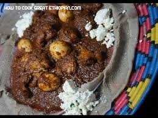

Injera

one of the most famous of all African dishes – it's fabulous! This authentic Doro Wat recipe captures the very best of Ethiopian cooking!
- Wash and soak the chicken in cold water with lemon squeezed into it for 30 minutes. (This removes any bacteria and tenderizes the meat.)
Caramelize the red onions on low heat in a large pot for 1 hour. Add the berbere, Niter Kibbeh, garlic and ginger and cook for 30 minutes on medium-low heat.
- Melt the butter on low heat in a large pot. Blend together the bishop seeds, cardamom seeds and black cumin until powder form using coffee grinder or food processor.
- Heat a large cast-iron pan over medium heat. Pour 1 cup fermented mixture into it, swirling the pan to cover the entire surface area. Cover with a lid, 2 to 3 minutes. Injera is ready to plate when holes have formed on the surface. Place the injera on a plate and serve.